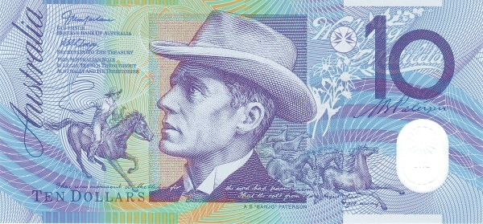
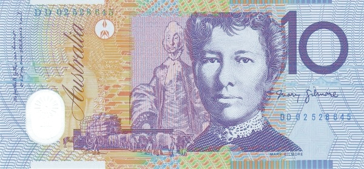
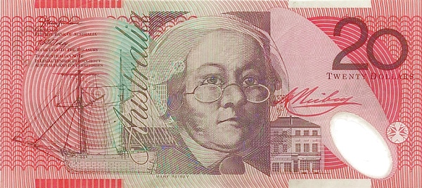
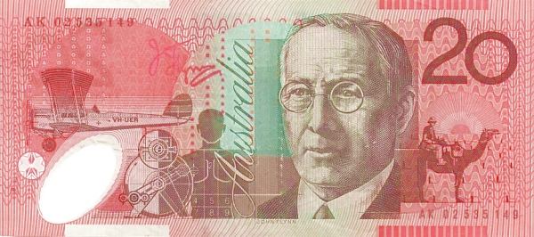
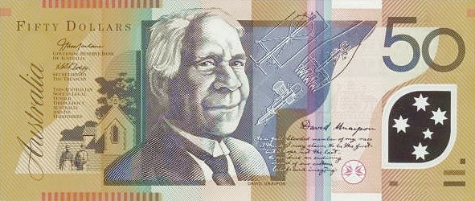
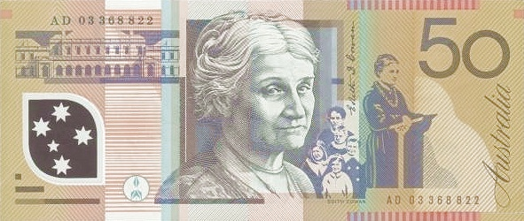
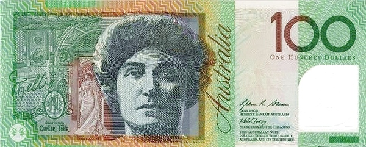
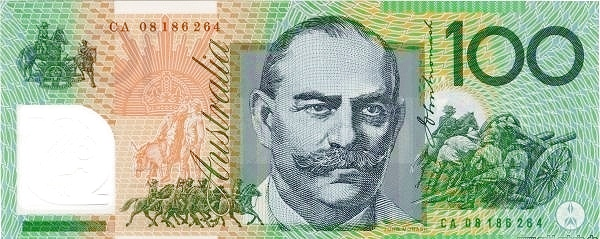

Австралия - Австралийский доллар
5 долларов


Лицевая сторона - Елизавета II
Обратная сторона - Современное и старое здание австралийского парламента
10 долларов
 Лицевая сторона - В центре — портрет Банджо Патерсона, отрывок из поэмы Патерсона «Парень со Снежной реки» (микропечать); слева — лошадь с наездником (проводится параллель с поэмой Патерсона «Парень со Снежной реки»), виньетка с ветряной мельницей; справа — бегущие необъезженные лошади, надпись «Waltzing Matilda» (австралийская народная песня, называемая «неофициальным гимном Австралии» и слова к которой написаны Патерсоном).
Обратная сторона - В центре — портрет Мэри Гилмор, слева от него — портрет постаревшей Гилмор, написанный Уильямом Добеллом, отрывки из поэмы «Никогда врагу не собирать наш урожай» (микропечать); слева — изображение волов, перевозящих шерсть, а также сельской женщины и сельской местности; справа — подпись Мэри Гилмор.
20 долларов
 Лицевая сторона - В центре — портрет Мэри Рейби; слева — шхуна «Mercury», принадлежавшая Рейби, виньетка с изображением компаса; справа — дом на Джордж-стрит в Сиднее, принадлежавший Рейби, её подпись.
Обратная сторона - В центре — портрет Джона Флинна; слева — санитарный самолёт «Victory», на котором летал Флинн, педальный генератор, медицинская диаграмма «Где болит?»; справа — верблюд и наездник (верблюды использовались Флинном во время своей миссии в центральной Австралии).
50 долларов
 Лицевая сторона - В центре — портрет Дэвида Юнайпона, схема прибора для стрижки овец, запатентованного Юнайпоном, введение, написанное рукой Юнайпона, к своему рассказу «Легендарные истории австралийских аборигенов»; слева — миссионерская церковь и семейная пара австралийских аборигенов; справа — виньетка с изображением созвездия Южного Креста.
Обратная сторона - В центре — портрет Эдит Коуэн, изображение матери и приёмных детей; слева — здание парламента Западной Австралии (Коуэн была депутатом этого парламента); справа — изображение Коуэн за кафедрой, читающей свою речь, посвящённую правам женщин и благополучию детей.
100 долларов
 Лицевая сторона - В центре — портрет Нелли Мелба; слева — изображение убранства театра, в котором играла Мелба во время своей концертной программы 1902 года, изображение актрисы на сцене, подпись Мелбы; справа — виньетка с изображением лирохвоста.
Обратная сторона - В центре — портрет Джона Монаша, его подпись; слева — изображение нагрудного знака Восходящего Солнца, Джона и осла (изображение на основе памятника в Мельбурне), кавалерия; справа — солдаты и пушка